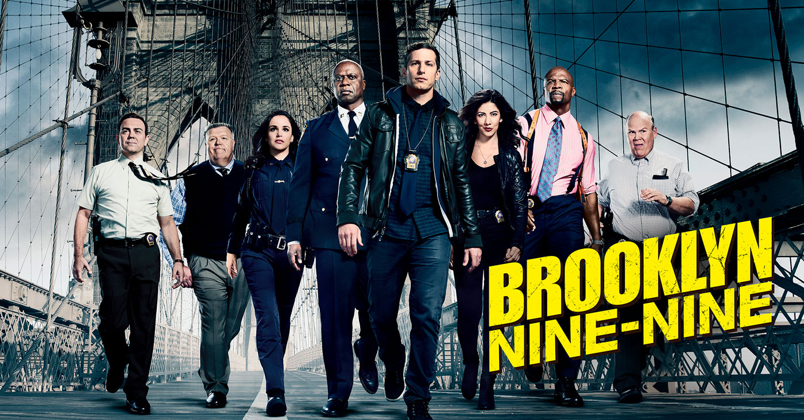

Brooklyn Nine-Nine (abreviado como B99) é uma série de televisão de comédia policial americana criada por Dan Goor e Michael Schur. A série gira em torno de Jake Peralta (Andy Samberg), um imaturo, mas talentoso, detetive da polícia de Nova York na fictícia 99.ª Delegacia do Brooklyn, que muitas vezes entra em conflito com seu novo comandante, o sério e severo capitão Raymond Holt (Andre Braugher). O restante do elenco inclui Stephanie Beatriz como Rosa Diaz, Terry Crews como Terry Jeffords, Melissa Fumero como Amy Santiago, Joe Lo Truglio como Charles Boyle, Chelsea Peretti como Gina Linetti, Dirk Blocker como Michael Hitchcock e Joel McKinnon Miller como Norm Scully.
Ainda não sabe muito sobre seus personagens favoritos? Veja aqui tudo o que voce precisa saber!
Ver Mais
Quer saber os melhores shipps? Atenção que aqui você pode encontrar MUITOS SPOILERS!!
Ver Mais
Ao todo são 8 incríveis temporadas! Saiba em quais streams você pode maratonar para matar a saudade.
Ver MaisSaiba mais sobre os melhores momentos da série e em que episódios você pode encontrá-los!
Ver Mais